If your face looks off, it probably means your features are placed in the wrong perspective.

front view — easy

any other angle — hard
It's not that hard to draw the face from the front — everything sits on straight lines and nothing is warping.
But when the head tilts and we're looking from a different perspective, those straight lines warp. That makes it really hard to place features correctly.
To see how perspective works, let's look at a ball from two different angles
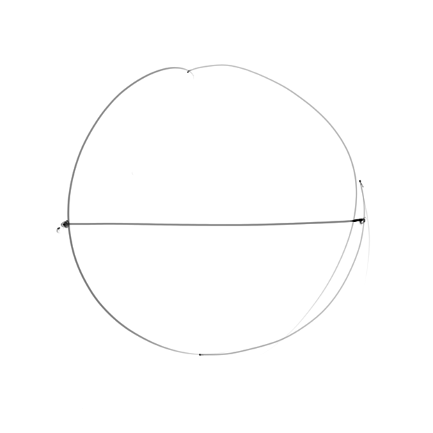
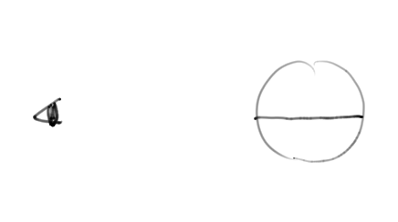
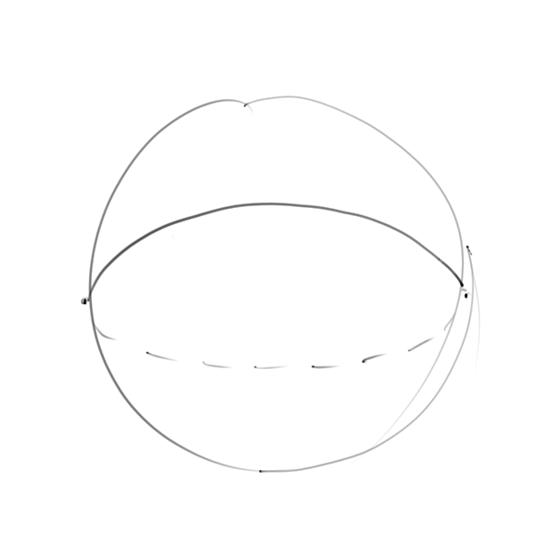
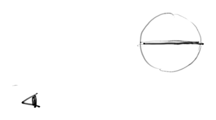
Notice how the straight line curves because of perspective?
The same applies to every line on the face.
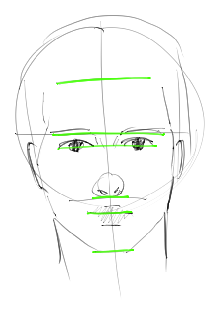
front view
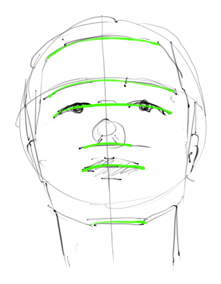
3/4 view
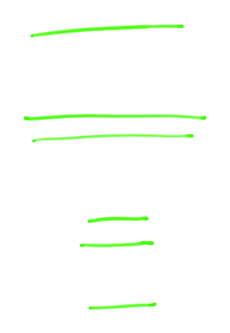
guidelines only — front
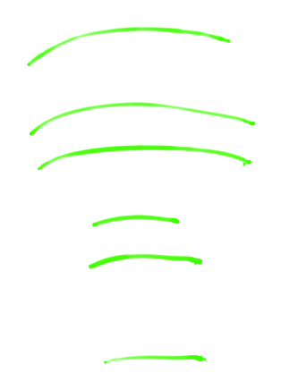
guidelines only — angled
Every line on the face warps and follows a curved path.
Here's the mistake I used to make — I'd try to guess that curved path by eye. Some days my drawings looked fine. Other days they'd completely fall apart.
The fix is obvious once you see it. We just need to draw the features over these curved paths. Those paths are guidelines.
01
Place the brow line
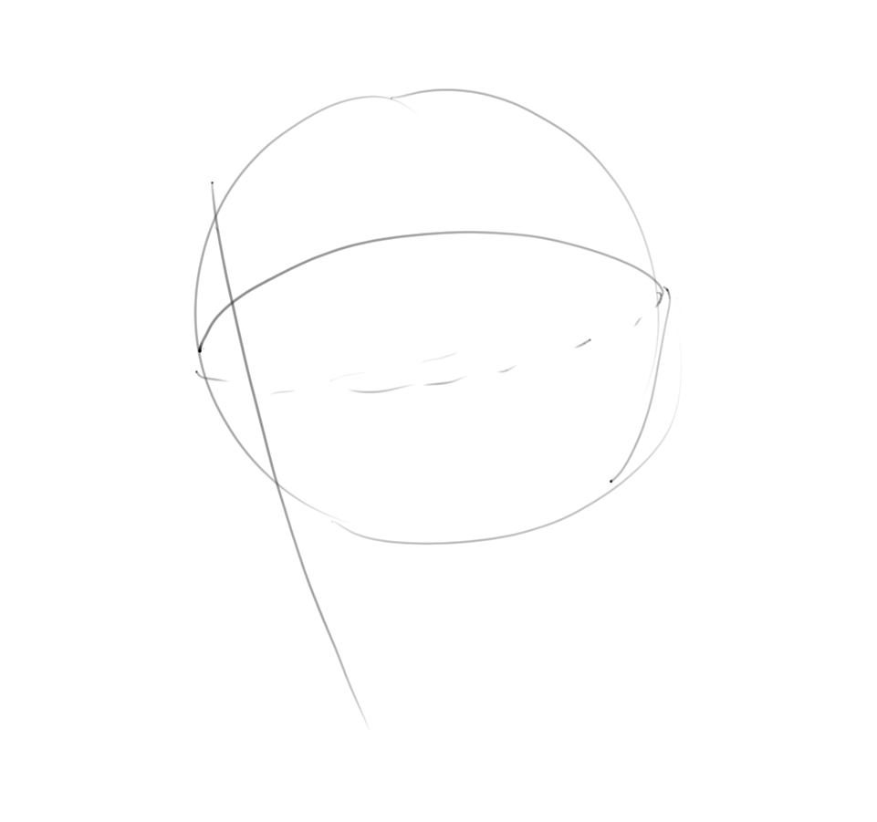
2 key points
Every other line follows from this one — get it wrong and everything shifts
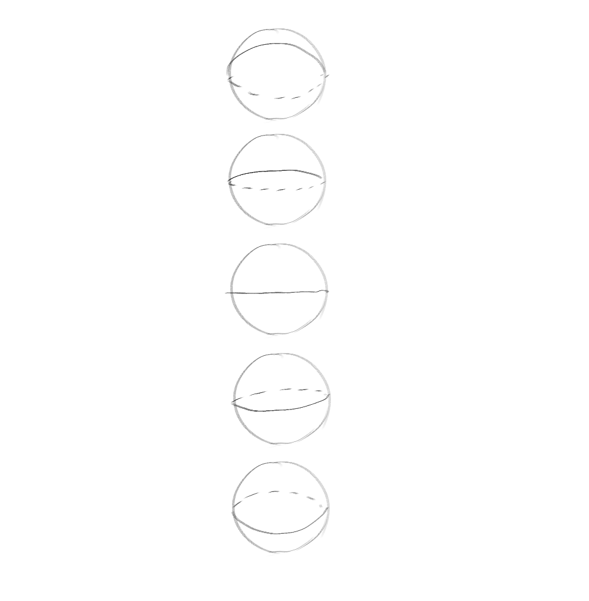
The curve of this line tells you exactly how the head is angled. Every guideline you place after is based off it — so a wrong brow line means every feature ends up misplaced, even if you draw them correctly.
Don't estimate — visualise the rubber band
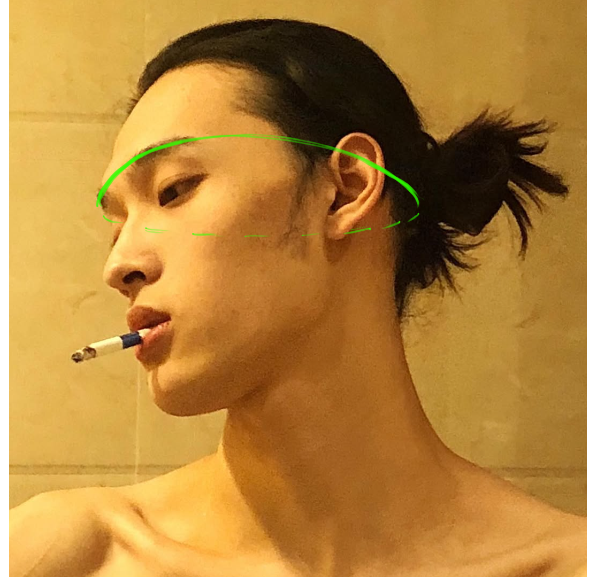
Imagine a rubber band wrapped around the head at brow level on your reference. Visualise where it sits and how it curves — then replicate that on your sphere.
02
Add the remaining horizontal guidelines
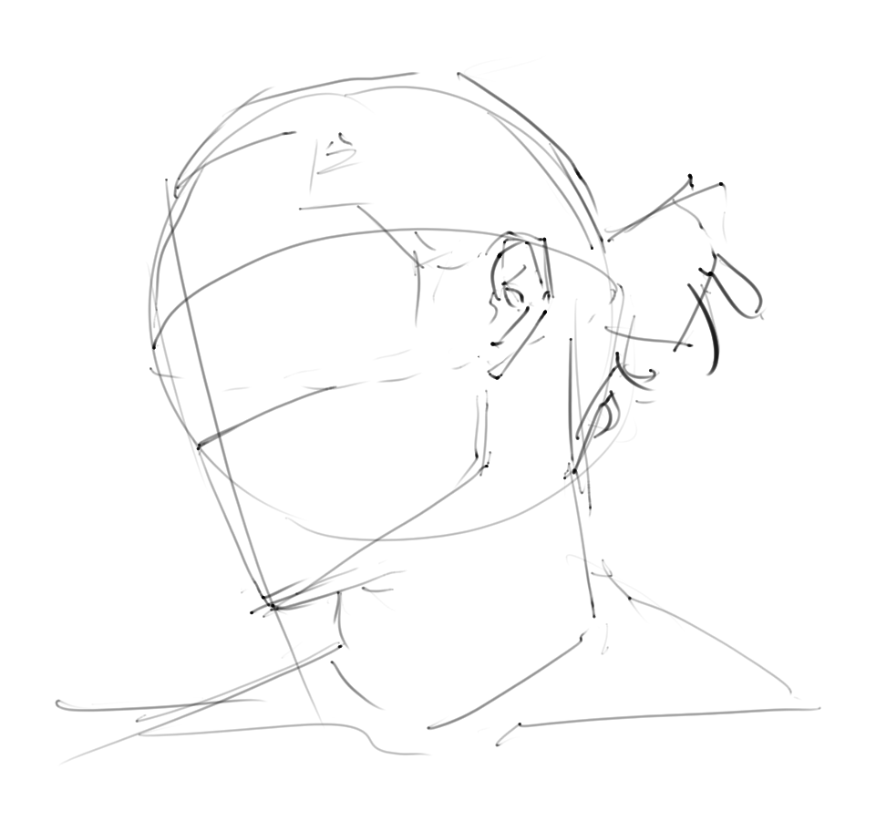
2 key points
The further from your eyeline, the more it curves
Your eyeline is the horizontal level of your point of view. Guidelines further above or below it appear to curve more — because you're looking at them at a steeper angle. The further a line is from your eyeline, the more pronounced the curve.
The thirds compress the further they are from the eyeline
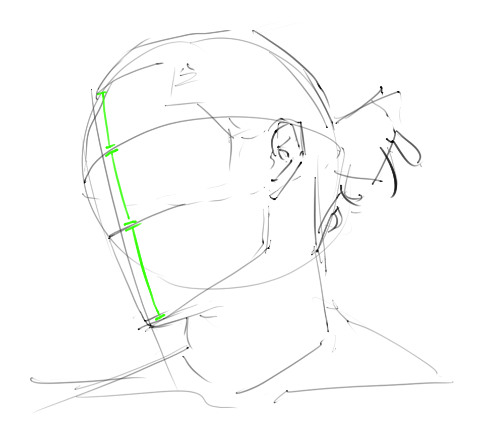
Foreshortening means the spacing between guidelines isn't equal — it compresses. The third furthest from the eyeline appears smaller. Look at the reference and measure carefully rather than assuming equal spacing.
03
Draw the horizontal guidelines for each feature
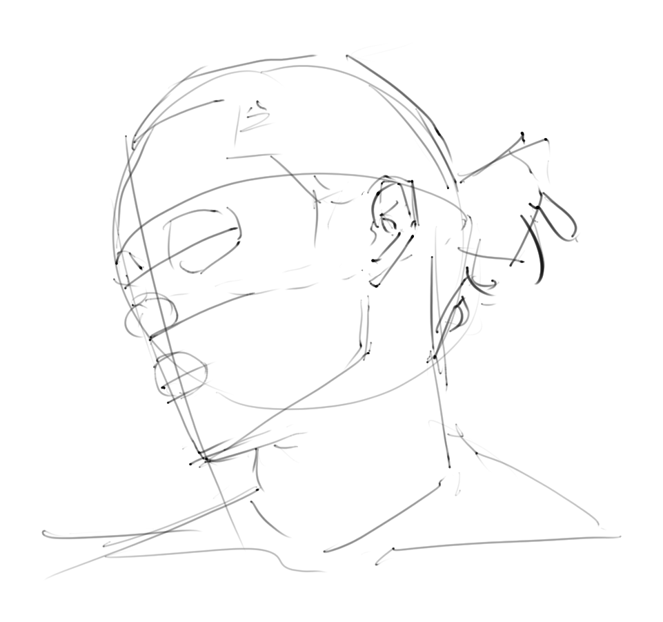
2 key points
Each feature gets its own guideline — how much it curves depends on how far it is from the eyeline
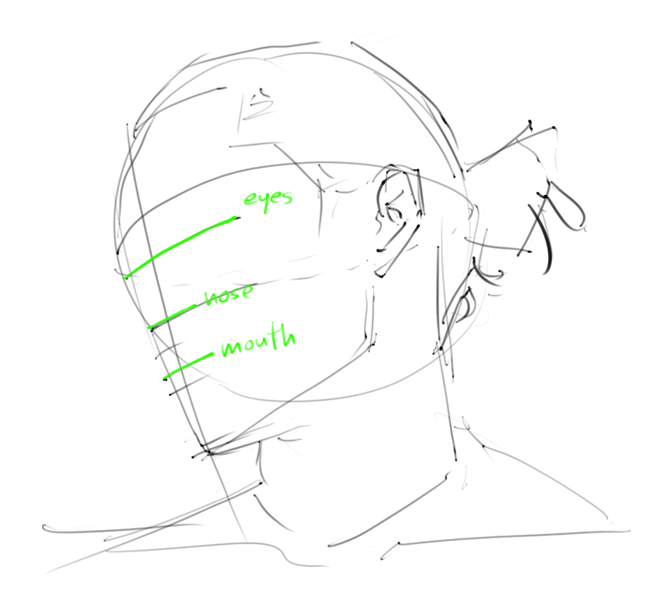
Eyes, nose, and mouth each get a horizontal guideline curved around the sphere. The further each line sits from your eyeline, the more it curves — same principle as the horizontal guidelines, applied to each feature.
Draw the feature along the guideline — not freehand
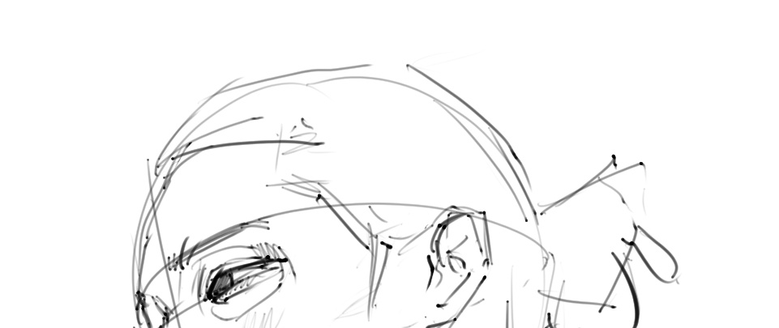
Once the guideline is in place, the feature sits along it. The guideline is your axis — the eye follows the eye line, the mouth follows the mouth line. This is what stops features from drifting out of perspective.
result
Now draw.
The guidelines have done all the hard work. Every feature is in the right place, at the right angle, with the right proportions. You're just connecting the dots.
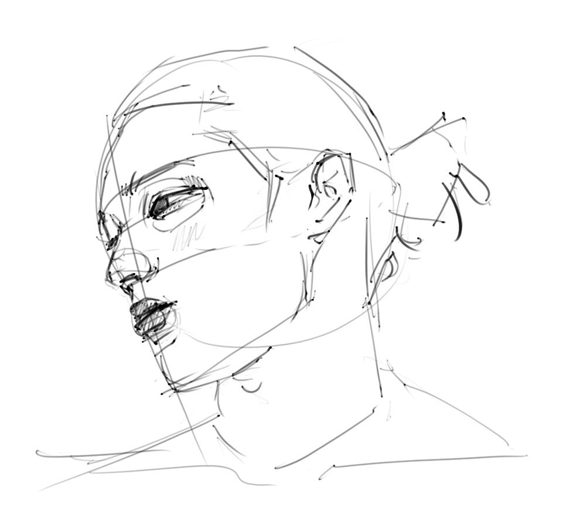